Visualize Single Cells & Clusters
-
In order to understand brain-wide neuronal dynamics of zebrafish,
Kuns et al
built a cellular-resolution atlas of the zebrafish brain and reconstructed over 2,000 individually GFP-labeled neurons.
Moreover, they perform hierarchical clustering on these 2,000 neurons and end up with 18 distinct cell clusters or "cell types"
On the otherhand, Simone et al also reconstructed few direction selective neurons in the hindbrain of zebrafish. Our platfrom
consist of both the datasets. User can even load their custom cell morphologies in "swc" format.
This tutorial provides a step-by-step tutorial for the visualization of retinal ganglion cell (RGC) cluster in Kuns et al dataset.
Follow the steps below to display and visualize single-cell clusters: - When FishExplorer is running, a default window like the one shown below appears on the screen.
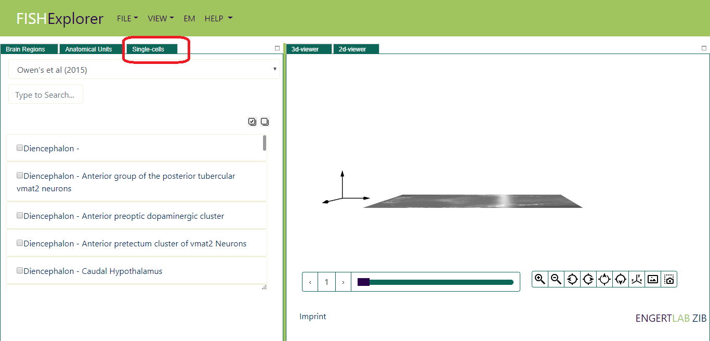
- Click the link "Single Cells" (encircled red in the image above), Single cell viewer will appear on screen
(as shown in the image below).
The default selected dataset is Kuns et al, list of predefined clusters for the selected dataset will appears
on the screen (encircled red in the image below)
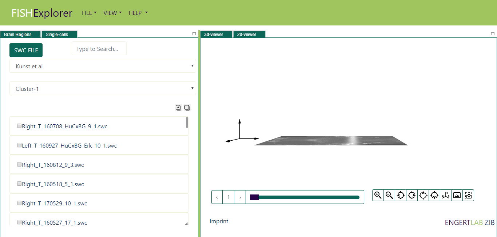
-
Imagine now that you want to display e.g. retinal ganglion cell (RGC) cluster
In order to do that, select the cluster-11.(encircled red in the image below)
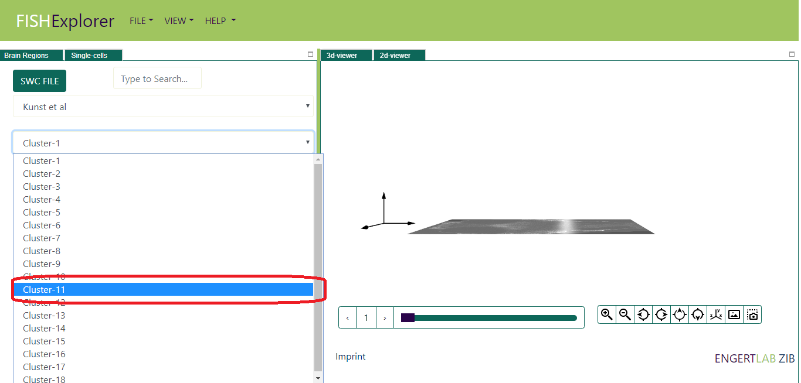
- The list of neurons
will appear on screen (encircled green in the image below).
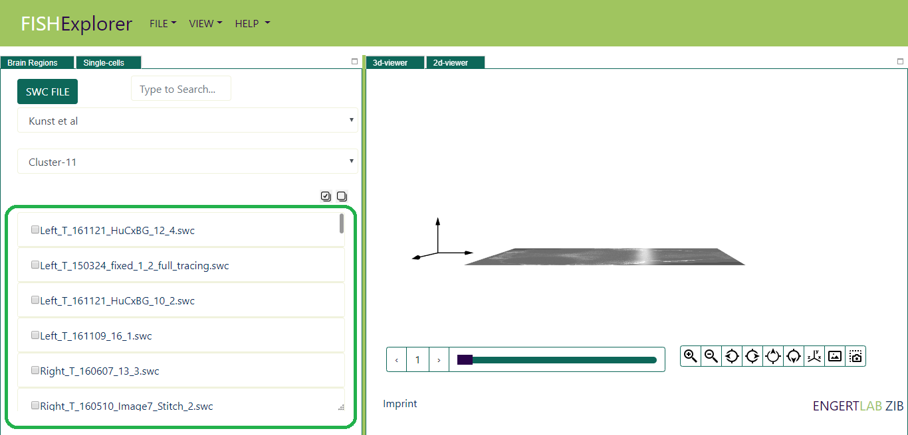
- Next, you can visualize all the neurons by clicking the checkall button
(encircled red in the image above).The color is randomly assigned to neurons.
One can even load the individual neuron by
selecting the checkbox in front of the neuron name.
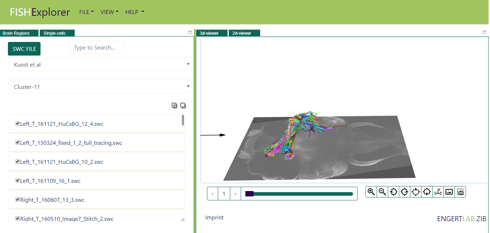
- Next, visualization of all the 18 distinct clusters as shown below.
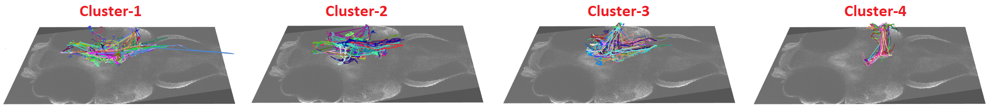
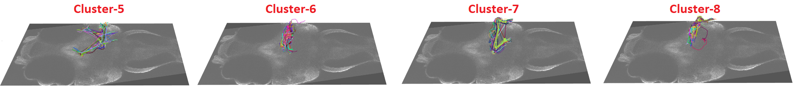
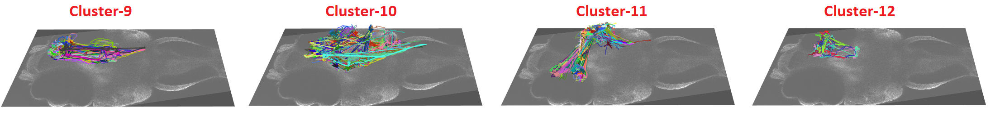
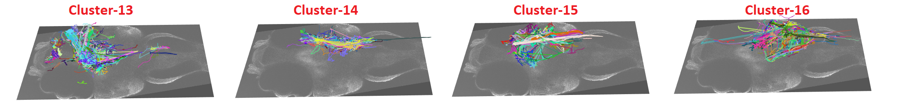
- Next, Imagine now you want to load your custom neuron file. Click the swc file button (encircled red in the image below).
This functionality is client side i.e neuron data temporary stored in user's browser memory. We are not storing
any custom neuron files on our server.
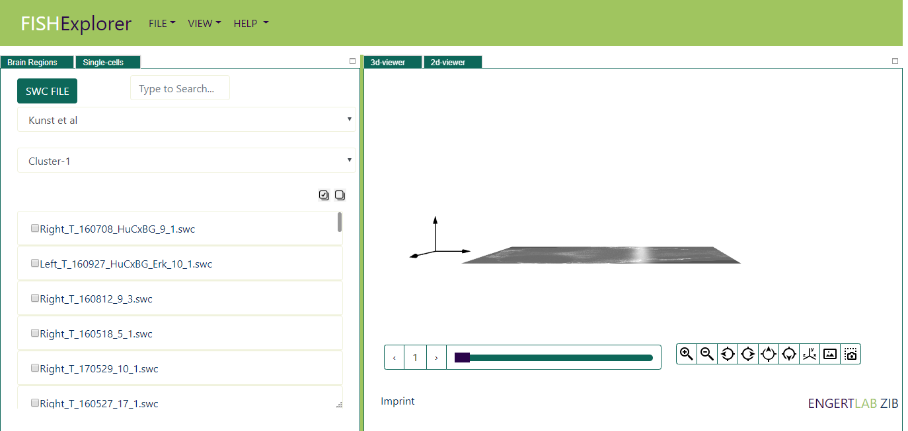
- Next, load the file using file browser as shown in the image below.
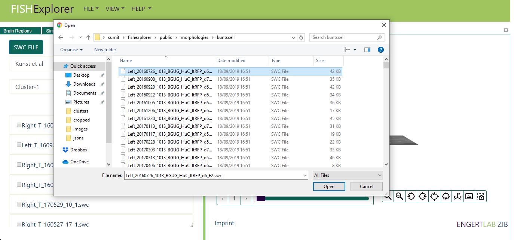
- Next, the neuron will appear on the screen and the neuron will be listed in uploaded
datasets (encircled red in the image below) .
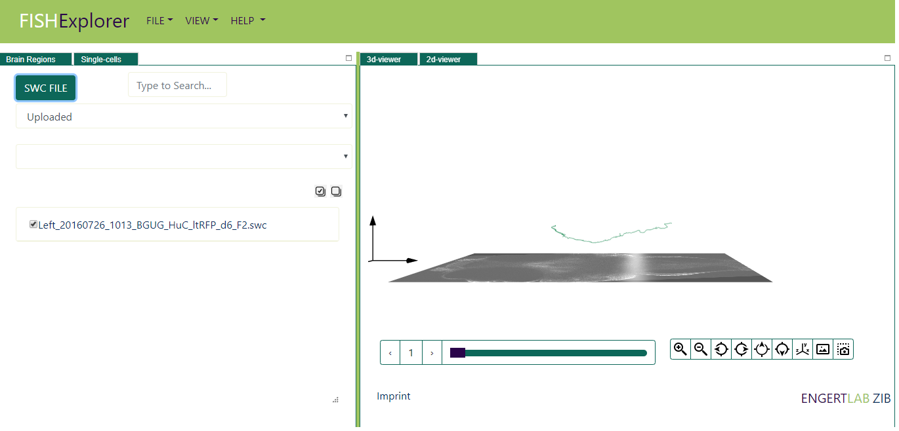